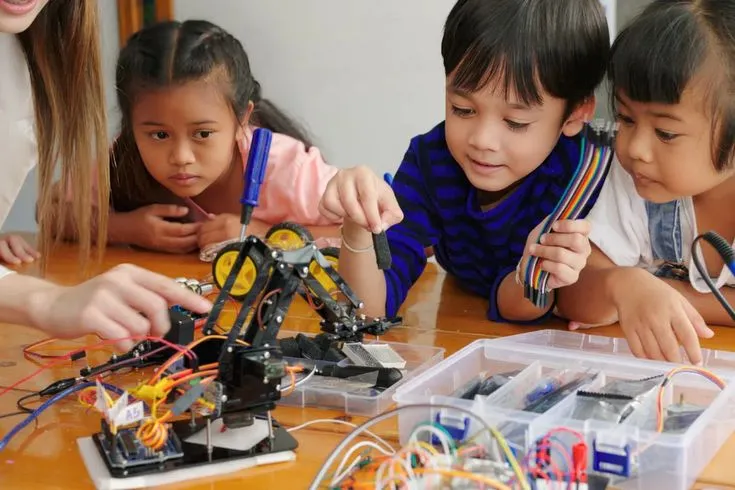

Awal Perjalanan Menuju Kompetisi
Prestasi emas di Olimpiade Sains Nasional tidak datang secara instan. Perjalanan ini dimulai dari kebiasaan belajar yang disiplin, rasa ingin tahu yang tinggi, dan keberanian untuk mencoba tantangan di luar kegiatan akademik rutin. Sejak seleksi awal, siswa kami menunjukkan komitmen kuat untuk terus berkembang, tidak hanya menghafal konsep, tetapi juga memahami cara berpikir ilmiah.
Di tingkat sekolah, proses pembinaan dilakukan secara bertahap. Guru pembimbing membantu memetakan kekuatan dan area yang masih perlu diperkuat, sementara siswa dilatih untuk mengerjakan soal dengan strategi yang lebih terstruktur. Hal ini membuat persiapan kompetisi menjadi lebih fokus dan efektif.
Strategi Latihan dan Pendampingan
Salah satu kunci keberhasilan adalah pola latihan yang konsisten. Siswa tidak hanya mengerjakan latihan soal, tetapi juga melakukan pembahasan mendalam, simulasi waktu, dan evaluasi hasil latihan. Pendekatan ini membantu siswa terbiasa menghadapi tekanan kompetisi sekaligus meningkatkan ketelitian dalam menjawab soal.
- Latihan rutin dengan target mingguan yang jelas.
- Pembahasan soal bersama guru pembimbing secara intensif.
- Simulasi lomba agar siswa terbiasa dengan ritme kompetisi.
- Pendampingan mental untuk menjaga fokus dan kepercayaan diri.

Diskusi dan pembinaan yang intens membantu siswa memahami konsep lebih dalam sebelum menghadapi kompetisi.
Dampak Prestasi bagi Lingkungan Sekolah
Pencapaian ini memberi dampak positif yang besar bagi seluruh lingkungan sekolah. Bagi siswa lain, keberhasilan ini menjadi sumber inspirasi bahwa prestasi tinggi dapat diraih melalui proses yang serius dan konsisten. Bagi guru, ini menjadi validasi bahwa pendekatan pembelajaran yang terarah dan personal memang mampu membantu siswa berkembang maksimal.
Selain itu, prestasi nasional juga memperkuat budaya akademik di sekolah. Siswa menjadi lebih termotivasi untuk mengikuti program pembinaan, sementara sekolah semakin terdorong untuk menyediakan ruang belajar yang lebih baik, materi latihan yang relevan, dan dukungan yang berkelanjutan.
Pelajaran Penting untuk Siswa Lain
Ada beberapa pelajaran berharga dari prestasi ini. Pertama, hasil besar selalu dimulai dari kebiasaan kecil yang dilakukan dengan disiplin. Kedua, keberanian untuk meminta bantuan dan berdiskusi dengan guru adalah bagian penting dari proses belajar. Ketiga, mental yang siap sama pentingnya dengan kemampuan akademik.
Bagi siswa yang ingin mengikuti jejak serupa, fokus utamanya bukan semata-mata pada medali, tetapi pada proses membangun kemampuan, karakter, dan rasa percaya diri. Saat proses itu dijalani dengan serius, hasil positif biasanya akan mengikuti.